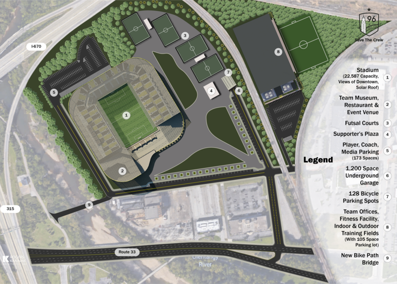
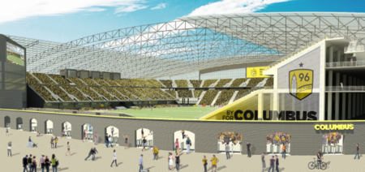
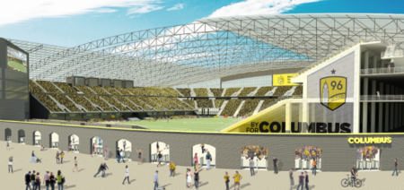

THE STADIUM
On August 6th, 2018, at a special event featuring Crew legend Dante
Washington, Save The Crew unveiled a secret project we had spent months on.
It was time for us to reveal what a new stadium could look like if it was designed
with our unique history and fan base in mind.
Save The Crew's strength has always been our group’s multifaceted and diverse skill
set. We often have people within our ranks who provide talents we never could’ve known
we would need when this all started. This immense undertaking was a joint collaboration
between architects, planners, marketers, and volunteers, all working in their spare
time over 8 months and multiple states, to devise a plan to build a soccer stadium in
the heart of the urban core, in the heart of the entertainment district of Columbus.
We have put painstaking detail into making this stadium plan as feasible as possible
with the information available to us. We took growth and profitability into account,
because we know that proper hands-on ownership (as it now appears we are set to have)
can and will mean guaranteed success in this community.
And yet, we have also managed to dream big for the future.
THE GROUNDS
A quick scan of your smart ticket means you’re in. You’ve
got some time to peruse the plaza. Maybe you head over to the futsal courts to
watch some pickup games. Maybe a stroll through the club museum will take you back to
the plucky days of 90s MLS all the way through the time the Crew was “saved”.
And whether you need to grab some food from a
locally-based vendor, or seeking out your favorite local microbrew at any one of the
many bar options, or it’s finally time to get this year’s kit at the team store,
everything you could want to complete your unique gameday experience is offered within
the confines of Crew SC’s forever home.
No matter where your seats are, you’ll be with over 22,000 of your closest
soccer friends. Off in the distance? A sweeping view of the Columbus skyline,
the forever home of Crew SC

SITE PLAN DETAILS
» The stadium is situated on the plot of land currently bordered by I-670 to the north, West Nationwide Boulevard to the south, a railroad to the east, and the Olentangy River to the west.
» The stadium would sit at a 30 degree angle on the Western edge of the plot, allowing for a mostly open southeast corner of the structure, offering a breathtaking view of downtown.
» Four futsal courts will be available for 24/7 public use, accessible via street parking.
» A large atrium in the southwest corner houses a team-museum, restaurant, and event venue that is open for regular business hours year-round and would also be available for private and corporate events.
THE VIEWS
The stadium offers a wide variety of seating options featured within its 22,587
capacity in order to make accommodations inclusive for the wide array of fan types
that cheer on Columbus Crew SC. Whether you are taking a family, looking for a
luxurious matchday experience, just looking to get in the gate to cheer, or are
one of the die-hard supporters, there will be an option that works for you.
» Most common are the 17,730 standard seats, all of which fold-down
and feature arm rests. 3,864 safe standing “seats” can be folded up
or down as preference allows, or locked in the seat position if
required by certain types of event contracts
» The south end will feature several areas of terrace “bar seating”
(450 seats total). These rows of bar stool-height seats feature a
length of wood “table top” at the front of each row and would also
come with full service for ordering food and beverage
» Field level VIP boxes on West sidelines offer a special experience
and an “on-field” feel. These boxes would come in varying sizes and
price points (543 total seats)
There will be no bad ticket option if you are simply looking for a great view of the
game. For that extra-Instagram-ready view, seats on the west and northwest areas
of the stadium offer a juxtaposition of the Columbus skyline towering right over our field.
This wide-open view of downtown Columbus through the southeast corner of stadium
reflects a modern approach to having sports stadiums offer iconic, unique views that
integrate them into their communities (think PNC Park in Pittsburgh or Great American
Ball Park in Cincinnati). There will be no question as to where the game is being played
when people watch a national broadcast from Columbus, whether it’s a Crew SC match or
the next Dos-a-Cero
 
